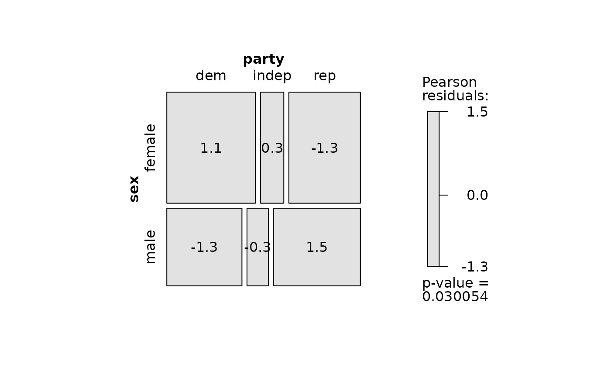

Data from the General Social Survey, 1991, on the relation between sex and party affiliation.
Format
A data frame in frequency form with 6 observations on the following 3 variables.
sexa factor with levels
femalemalepartya factor with levels
demindeprepcounta numeric vector
Examples
data(GSS)
str(GSS)
#> 'data.frame': 6 obs. of 3 variables:
#> $ sex : Factor w/ 2 levels "female","male": 1 2 1 2 1 2
#> $ party: Factor w/ 3 levels "dem","indep",..: 1 1 2 2 3 3
#> $ count: num 279 165 73 47 225 191
# use xtabs to show the table in a compact form
(GSStab <- xtabs(count ~ sex + party, data=GSS))
#> party
#> sex dem indep rep
#> female 279 73 225
#> male 165 47 191
# fit the independence model
(mod.glm <- glm(count ~ sex + party, family = poisson, data = GSS))
#>
#> Call: glm(formula = count ~ sex + party, family = poisson, data = GSS)
#>
#> Coefficients:
#> (Intercept) sexmale partyindep partyrep
#> 5.56611 -0.35891 -1.30833 -0.06514
#>
#> Degrees of Freedom: 5 Total (i.e. Null); 2 Residual
#> Null Deviance: 271.4
#> Residual Deviance: 7.003 AIC: 55.59
# display all the residuals in a mosaic plot
mosaic(mod.glm,
formula = ~ sex + party,
labeling = labeling_residuals,
suppress=0)
